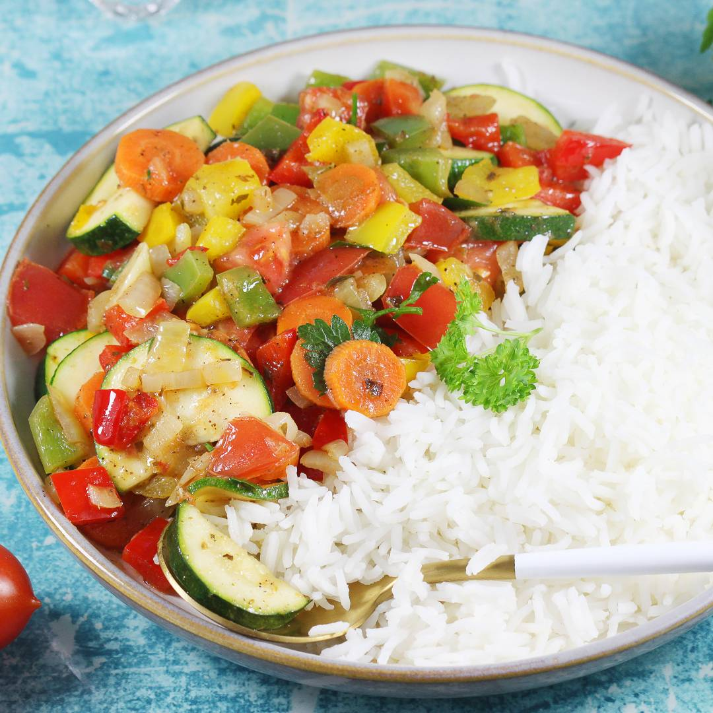

Rice with vegetables

It's favourite dinner for a person who care about strong and health body
Ingredients :
- 1 cup of rice, such as basmati - 230 g (weight before cooking)
- 1 green bell pepper - about 160 g
- 1 yellow bell pepper - about 180 g
- 1 red bell pepper - about 180 g
- 1 medium zucchini - about 270 g
- 1 medium onion - about 160 g
- 1 large tomato - about 250 g
- 2 medium smaller carrots - about 160 g
- 6 medium cloves of garlic
- 3 tablespoons Vegeta Natur liquid seasoning or 2 tablespoons dark soy sauce
- handful of parsley
- 6 tablespoons of frying oil
- seasonings: flat teaspoon of pepper, teaspoon of oregano
Steps in order :
- Cook the rice. I chose loose basmati rice. A cup of dry rice weighed 230 grams in my case. When cooked, the rice weighed
620 grams. You can also confidently cook two or three bags of rice in sachets of 100 grams each, or opt for other rice
such as red or wild rice. Place the cooked rice in a bowl and cover with a plate.
- Wash the peppers and clean them from the seed nests. Cut them into small pieces. You can confidently use, for example,
three red peppers or three orange ones, but the more colors on the plate, the better.
- Wash the remaining vegetables as well. Peel the carrots and cut them into thin slices. Peel and shred the onion. Only
cut the tomato into larger pieces, while cut the zucchini into half slices without peeling. Peel and slice the garlic
cloves.
- Preheat a large frying pan. Pour in about six tablespoons of frying oil. Put the onions and carrots in the pan first.
Sauté the vegetables on a medium burner for 10 minutes. Stir them a few times with a wooden spoon while sautéing.
- After 10 minutes, also add peppers, zucchini and garlic. Sprinkle the vegetables with spices. This will be a flat
teaspoon of pepper and a teaspoon of oregano. Mix the whole thing thoroughly and fry for another 10 minutes.
- After that, also add three tablespoons of Vegeta Natur liquid seasoning or pour in two tablespoons of dark soy sauce.
Stir the vegetables again. Saute them for the last five minutes and turn off.
- Just after taking the pan off the burner, add the tomato, which is still cut into pieces, and chopped parsley. If you
like cilantro, feel free to add it instead of the parsley, or mix the parsley and cilantro together.
- The vegetables for the rice are now ready. Check their taste and decide if you want to add more seasoning. The
vegetables will be seasoned, but remain crisp and firm. I serve the rice with the vegetables separately and mix them as
desired on the plate.
- You can also boldly add the whole cooked rice to the vegetables. Then you mix everything together and sauté once more.
It's also a great idea to put the dish into a casserole dish. You sprinkle your favorite grated cheese on top and bake
the whole thing with the heat from the top.
- Rice with vegetables also tastes great with pre-fried pieces of chicken or tofu.